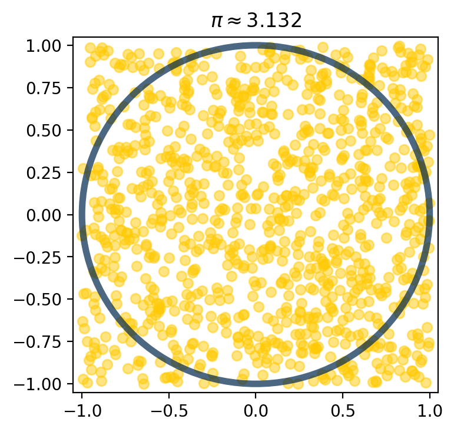
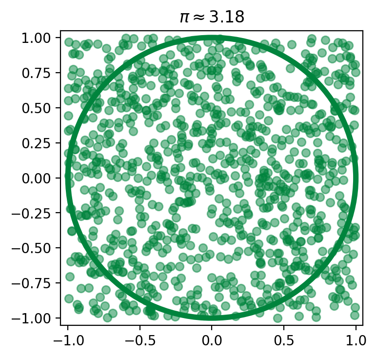

Pseudocode
Contents
Pseudocode¶
Reference: Chapter 2 of Computational Nuclear Engineering and Radiological Science Using Python, R. McClarren (2018)
Learning Objectives¶
After studying this notebook, completing the activities, and asking questions in class, you should be able to:
Understand the importance of using pseudocode to divide programming into logic and syntax components.
Write complete pseudocode for a given problem.
Pseudocode¶
Pseudocode is a high-level planning tool for writing a computer program. The main idea is to capture the essential steps, i.e., all of the logic, without worrying about syntax. In this class, complete pseudocode must:
Show all of the logical steps
Include enough comments so anyone can read and follow the steps
Indentend to show blocks (e.g., what is inside a for loop)
We will practice writing pseudocode starting in Lecture 1. It is easy to pick-up after a few examples.
Why is it important to write pseudocode? Experienced programmers use pseudocode to divide creating a computer program into two main steps:
Determining the correct logic
Determining the correct syntax
Many experienced programmers will tell you that step 1 – determining the correct logic – is by far the most important and difficult step. A common mistake of novice programmers is to rush through step 1. In previous semesters, almost all students that self-reported spending more than 10 hours on assignments skipped writing pseudocode. They instead focused on finding the current Python syntax, which was often a wasted effort because their logic was wrong! You will write a lot of pseudocode in this class: during class, in tutorial, for every assignment, and on exams. By requiring pseudocode, we seek to reenforce good programming habits, help you more systematically approach computer programming, and ultimately spend less on class assignments.
But I am a good computer programmer… Why can’t pseudocode be optional? We, Prof. Dowling and Prof. Colón, have been writing Python programs for almost 20 years. We still write pseudocode, because it is such an important programming skill. You’ll see pseudocode on our office whiteboards. If you are a novice programmer, writing pseudocode will help you tramendously in this class. Moreover, interviews for progamming-intensive jobs often involve writing pseudocode. The interviewer will hand you a whiteboard marker and ask you to work out the logic for an algorithm in real-time while asking you questions. Writing pseudocode in this class will help you ace that job interview. (Plus, if you are a programming whiz, writing pseudocode will only take a few minutes for assignments.)
Estimate \(\pi\) by throwing darts¶
Here is, perhaps, a more practical use of a for loop: to compute \(\pi\). The main idea is to throw darts at a square board and count the number of darts that land in an inscribed circle. We can do this on the computer by representing each dart as two numbers, x and y coordinates, each of which is generated \(-1\) and \(1\) from a uniform probability distribution (equal chance of selecting any number). Recall, we learned about how to generate random numbers.
Governing Formula¶
Class Activity
Write the formulas the calculate the area of i) a circle with radius 1 and ii) a square with edge length 2. How can we use the ratio of these areas to estimate pi? How is the ratio of these areas related to the number of darts that land in the box?
Pseudocode¶
TODO: Record video and embed here
Python Implementation¶
Class Activity
With a partner, spend 5 minutes writing pseudocode. If you finish early, jump ahead to implementing in Python.
Class Activity
After agreeing on the pseudocode as a class, implement the logic in Python. This step is much easier because we have a plan for the logic. We just need to decide on the correct syntax.
Python¶
Class Activity
Implement the pseudocode in Python.
# estimating pi by throwing virtual darts
import random
# Add your solution here
### Note: You need to finish this for the rest of the code to work.
This is our first example of a Monte Carlo method and we will return to these methods at the end of the course.
Using Help to Learn More About a Function¶
If you look in the solution in the reference textbook, you’ll see the random.seed command. Let’s learn more about what it does.
import random
help(random.seed)
Help on method seed in module random:
seed(a=None, version=2) method of random.Random instance
Initialize internal state from hashable object.
None or no argument seeds from current time or from an operating
system specific randomness source if available.
If *a* is an int, all bits are used.
For version 2 (the default), all of the bits are used if *a* is a str,
bytes, or bytearray. For version 1 (provided for reproducing random
sequences from older versions of Python), the algorithm for str and
bytes generates a narrower range of seeds.
Another Solution Approach - With Plots¶
Using numpy, which we haven’t covered yet, we can do this in an even fancier way. If we use matplotlib, another python library, we can get nice graphs as well.
import numpy as np
import matplotlib.pyplot as plt
#this line is only needed in iPython notebooks
%matplotlib inline
#pick our points
number_of_points = 10**3
x = np.random.uniform(-1,1,number_of_points)
y = np.random.uniform(-1,1,number_of_points)
#compute pi
n_inside = np.sum(x**2 + y**2 <= 1)
print(str(number_of_points) + " darts were thrown, and")
print(str(n_inside) + " darts landed inside the circle")
pi_approx = 4.0*n_inside/number_of_points
#now make a scatter plot
maize = "#ffcb05"
blue = "#00274c"
fig = plt.figure(figsize=(4,4), dpi=200)
plt.scatter(x, y, alpha=0.5, color=maize) #scatter plot with hex color
#draw a circle of radius 1 with center (0,0)
circle = plt.Circle((0,0),1,color=blue,
alpha=0.7, fill=False, linewidth=4)
#add the circle to the plot
plt.gca().add_patch(circle)
#make sure that the axes are square so that our circle is circular
plt.axis([-1,1,-1,1])
#set axes bounds: axis([min x, max x, min y, max y])
plt.axis([-1.05,1.05,-1.05,1.05])
#make the title have the approximation to pi
plt.title("$\\pi \\approx $" + str(pi_approx))
plt.show()
1000 darts were thrown, and
788 darts landed inside the circle

Do the same with Irish Green (see https://onmessage.nd.edu/athletics-branding/colors/):
import numpy as np
import matplotlib.pyplot as plt
#this line is only needed in iPython notebooks
%matplotlib inline
#pick our points
number_of_points = 10**3
x = np.random.uniform(-1,1,number_of_points)
y = np.random.uniform(-1,1,number_of_points)
#compute pi
n_inside = np.sum(x**2 + y**2 <= 1)
print(str(number_of_points) + " darts were thrown, and")
print(str(n_inside) + " darts landed inside the circle")
pi_approx = 4.0*n_inside/number_of_points
#now make a scatter plot
green = "#00843D"
fig = plt.figure(figsize=(4,4), dpi=200)
#scatter plot with hex color
plt.scatter(x, y, alpha=0.5, color=green) #draw a circle of radius 1 with center (0,0)
circle = plt.Circle((0,0),1,color=green, alpha=1, fill=False, linewidth=4)
#add the circle to the plot
plt.gca().add_patch(circle)
#set axes bounds: axis([min x, max x, min y, max y])
plt.axis([-1.05,1.05,-1.05,1.05])
#make the title have the approximation to pi
plt.title("$\\pi \\approx $" + str(pi_approx))
plt.show()
1000 darts were thrown, and
795 darts landed inside the circle

Notice how even with the same number of points we get different answers because we are using random numbers.